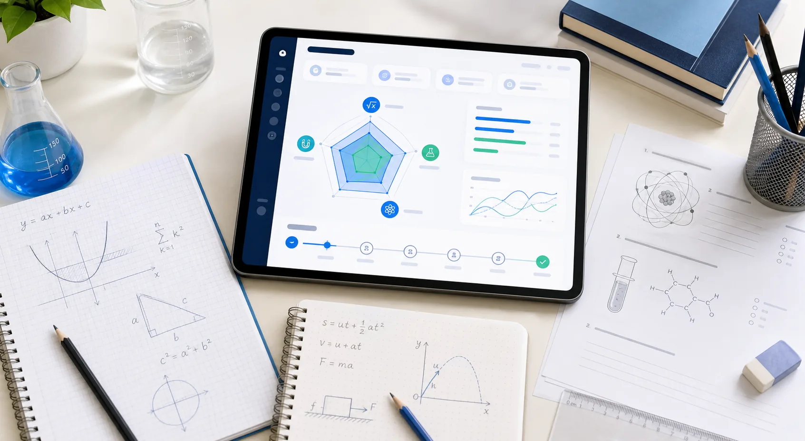

IGCSE Math
Algebra, graphs, functions, geometry, probability, calculator fluency, and multi-step reasoning.
View Math tutoringIGCSE Lab helps Year 8-11 students identify weak points, rebuild core thinking, and prepare for Cambridge-style Math and Science exams.

A student may follow examples in class but still break down when a question combines algebra, graphs, units, and unfamiliar wording.
Phụ huynh cần biết con đang yếu thật sự ở đâu, not only whether a recent quiz score was high or low.
The first step is to locate the academic weak points behind the score. Then the learning plan becomes narrower, calmer, and more useful.
Each subject page links back to the diagnostic test so parents can start with a clear picture before choosing tutoring.
Algebra, graphs, functions, geometry, probability, calculator fluency, and multi-step reasoning.
View Math tutoringFormula selection, units, graph interpretation, mechanics, electricity, waves, and explanation skills.
View Physics tutoringCore concepts, equations, moles, bonding, organic chemistry, practical skills, and command words.
View Chemistry tutoringA structured plan across Biology, Chemistry, and Physics for students who need balanced support.
View Combined ScienceA 30-45 minute session checks the student's current thinking, not only final answers.
We identify subject gaps, process errors, and exam-technique issues that repeat across questions.
Parents receive clear learning priorities and a suggested order for rebuilding foundations.
If tutoring is needed, sessions focus on targeted rebuilding and exam-style practice.
IGCSE Lab is built for parents who want a clear academic explanation before committing to long-term tutoring.
How mixed-topic questions reveal gaps in algebra, graphs, and reasoning.
Explain, describe, calculate, and compare require different kinds of answers.
A practical guide for Year 8-11 families choosing the right next step.
Find the weak points, receive a personal study roadmap, and decide the next step with evidence.